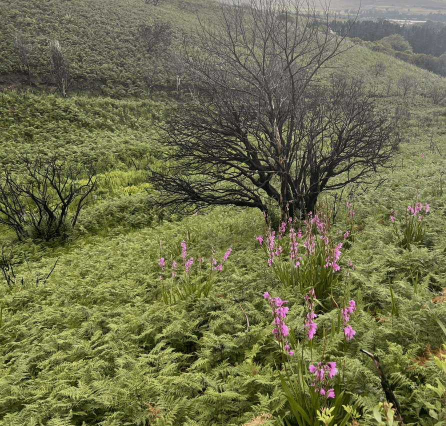

Swartboskloof lies scorched and bare —
from the parched heights above Helderberg vale
to where soot and the dead things swirl in the Eersteriver's pool,
as if they languidly bid farewell to what was — to what they were;
while the smoke from smoldering roots seeks to weave a veil
over what now lies bared in dark nudity,
with only the rocks still guiding beacons
in the fractal-charted void,
imagined borders traced by deeper gorges
Cork-screw and Assegaaibosch.
Swartboskloof is adorned in flowered splendor —
Watsonias and Arum lilies
stubbornly rising from the still-charred earth,
coloring the gorge with promises of blooms to come,
quietly affirmed by a green sprout
from the scorched Waboom,
Ferns embrace the silver streams that bubble
over moss-covered stones,
your heart leaps with joy at what intuitively seems
to be new life.
Yet the gorge knows not more than the eternal moment,
in which it is both emptiness and fullness.
Swartboskloof, with soft green contours folding
over the wounds and walls of all that is gorge,
undivided and continuous with all gorges,
in the Divine awareness of
never void, never fulfilled,
always perfect
and calls:
I AM the Alpha and the Omega!